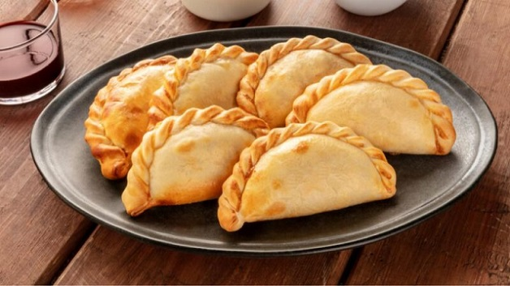

Cómo hacer empanadas de carne


Ingredientes
Masa para empanadas (comprada o casera)
500 gr de carne de res molida
2 cebollas picadas
1 pimiento rojo picado
2 huevos duros picados
100 gr de aceitunas verdes o negras picadas
Comino, pimentón, sal y pimienta a gusto
Aceite para freír o pintar la fuente para horno (dependiendo del tipo de cocción)
1 huevo batido
Preparación
En una sartén con aceite caliente, saltear las cebollas y el pimiento. Agregar la carne molida, condimentar y cocinar. Añadir mezclando los huevos duros picados y las aceitunas. Retirar del fuego.
Rellenar cada círculo de masa con la mezcla, doblar formando una media luna y sellar los bordes con un tenedor o repulgue.
Pincelar las empanadas con huevo batido para darles un brillo dorado. Hornear en horno precalentado a 180°C durante 25-30 minutos. Retirar.
Para freír las empanadas calentar una cantidad suficiente de aceite en una sartén a fuego medio. Freírlas unos 2-3 minutos y al retirar colocar sobre papel absorbente.